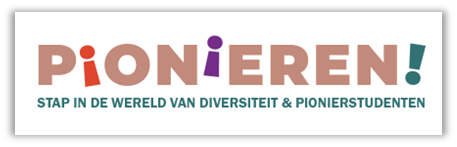
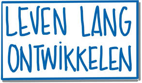

Nieuws & Evenementen
Hier onder vindt u alle nieuwtjes en toekomstige evenementen rondom het Asso.
Wilt u meer weten over een artikel of evenement klik dan op de kader waar het instaat.
-
Save the date: Landelijke Ad-dag 17 april 2026 locatie: Hanze
Het thema van deze dag is: ✨ Innovatie met impact ✨– hoe Ad-professionals vanuit hun praktijkgerichte en innoverende rol het verschil maken voor organisaties en samenleving. Een thema dat aansluit bij de unieke positie van de Ad’er: dichtbij de praktijk, met oog voor verandering en vernieuwin
-
🌟 Het spel Pionieren! is er – speciaal de onderwijsprofessional! 🌟
Na jaren van groeiende vraag – vanuit Nederland, Vlaanderen én daarbuiten – is het spel Pionieren! nu eindelijk breed beschikbaar voor hoger onderwijsinstellingen.

-
Save the date: ‘Making Waves’ – samen bouwen aan impactmakerschap op niveau 5
Op vrijdag 31 oktober 2025 ben je van harte uitgenodigd voor Making Waves: een inspirerende bijeenkomst over impactmakerschap op niveau 5, georganiseerd door de waardengedreven alliantie van Associate degree-opleidingen.

-
Workshops ‘Ad’ers zijn doeners met denkkracht’ op de Landelijke Ad-dag op 11 april 2025
De Ad-dag is een initiatief vanuit het Overlegplatform Associate degrees. Het thema was dit keer: “De Ad-professional als veranderaar die impact maakt in de beroepspraktijk”.

-
Landelijke Ad-dag 2025: Ad’ers zijn doeners met denkkracht
Op vrijdag 11 april vond bij Aeres Hogeschool in Dronten de vijfde editie plaats van de Landelijke Ad-dag. Ad-opleidingen zijn in trek: een groeiende groep mbo’ers kiest ervoor om na het behalen van het mbo-diploma nog twee jaar door te studeren.

-
Van Ad Talent tot Impactmaker 2.0
"Voor mij betekend impact maken dat je iets kunt betekenen voor anderen." In gesprek met Summer Rous, een jaar na het winnen van de Ad Talenten Award Voltijd.
-
Van Ad Talent tot Impactmaker 1.0
Winnaar van de Ad Talent Award 2024 deeltijd/duaal inspireert met vernieuwing en maatschappelijke betrokkenheid. Binnenkort is de uitreiking van de Ad Talent Awards 2025

-
Meld je aan: tweede editie werkcongres ‘LLO in het HBO’ op donderdag 15 mei 2025 in Amersfoort
Levenlang ontwikkelen (LLO) is een actueel thema in het Ad-onderwijs: veel Ad-studenten studeren in deeltijd of in een duaal traject om de volgende stap in hun loopbaan te zetten.

-
Nieuwe kwartiermaker Ad-onderwijs
De Associate degrees groeien hard in Nederland, en er is een kwartiermaker Ad-onderwijs nodig om de verdere groei en positionering strategisch te begeleiden.

-
Nieuw: Landelijke Ad-domeinprofielen voor de creatieve industrie
Het Overlegplatform Associate degrees feliciteert het Landelijk Ad-overleg cluster Creatieve Industrie met de nieuwe domeinprofielen Associate degree Communicatie & Media en Technologie & Media voor de creatieve industrie die door Vereniging Hogescholen zijn vastgesteld.

-
Terschelling, november 2024 – Ad-tweedaagse NHL Stenden!
Op 21 en 22 november kwamen collega’s van de Ad-opleidingen van NHL Stenden hogeschool samen op de NHL Stenden-campus op Terschelling, het Maritiem Instituut Willem Barentsz.

-
Ad Roadshow bij Hogeschool Utrecht
Om in gesprek te gaan over studentsucces: de juiste student op de juiste plaats, heeft het Instituut voor Associate Degrees van de Hogeschool Utrecht (HU) eind september een week lang met een tourbus op het Utrecht Science Park gestaan.

-
Landelijke Ad-dag 11 april 2025: thema, programma en inschrijving
De landelijke Ad-dag wordt op 11 april 2025 voor de vijfde keer georganiseerd door het Overlegplatform Associate degrees. Het event biedt de gelegenheid om elkaar te ontmoeten en kennis en ervaring uit te wisselen omtrent ontwikkelingen in het Ad-onderwijs.

-
Landelijk domeinprofiel Associate degree Logistiek vastgesteld
Het Overlegplatform Associate degrees feliciteert het LAdO Logistiek met het nieuwe landelijk domeinprofiel Associate degree Logistiek dat door Vereniging Hogescholen is vastgesteld.

-
Save the date: Landelijke Ad-dag 11 april 2025 – locatie Aeres Hogeschool in Dronten
De Landelijke Ad-dag 2025 vindt plaats op 11 april 2025 en wordt dit jaar gehost door Ares Hogeschool in het mooie Dronten. We hopen uiteraard dat je hierbij aanwezig zult zijn, dus reserveer de datum alvast in je agenda.

-
Workshops ‘De Ad-student als professional’ op de Landelijke Ad-dag op 19 april 2024
De Ad-dag is een initiatief vanuit het Overlegplatform Associate degrees en vond op 19 mei 2024 voor de vierde keer plaats, deze keer in Rotterdam. Het thema was dit keer: “De Ad-student als professional”. Rondom dit thema werden niet minder dan 23 workshops verzorg door Ad-collega's van in totaal 22 hogescholen, ROC's en andere organisaties.

-
TAd Talent Awards 2024
Tijdens de Landelijke Ad-dag op 19 april 2024 bij Rotterdam Academy zijn de Ad Talent Awards 2024 uitgereikt. Summer Rous van de Avans Academie Associate degrees heeft de Ad Talent Award voltijd ontvangen en Aline ten Napel van Van Hall Larenstein de Ad Talent Award deeltijd/duaal.

-
De Ad-student als professional op de Landelijke Ad-dag op 19 april 2024
We kijken met trots terug op een drukbezochte Landelijke Ad-dag 2024 bij Rotterdam Academy die door alle bezoekers positief werd ontvangen. Het overkoepelende thema van het event was In de praktijk doen we het samen.